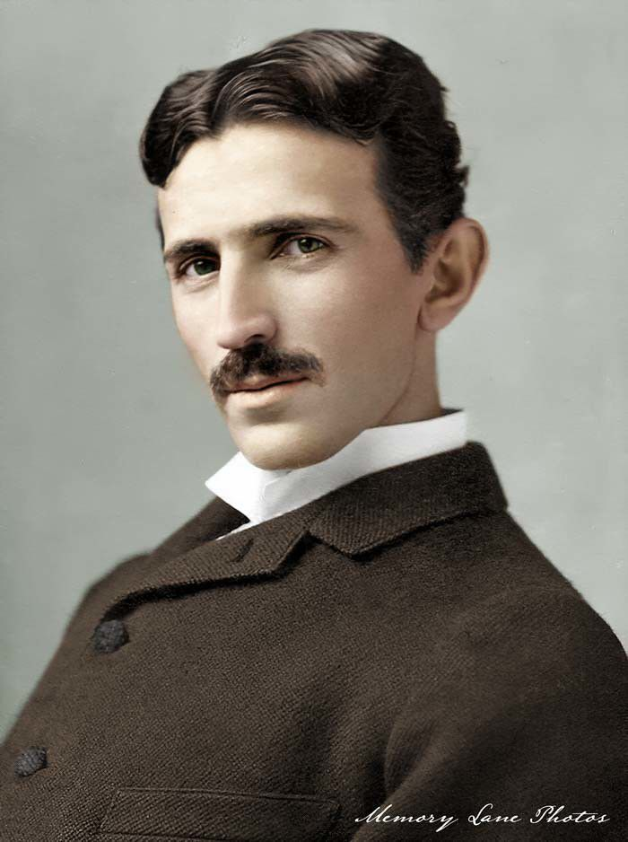

Serbian-American inventor Nikola Tesla developed the alternating-current electrical system that's widely used today, and discovered the rotating magnetic field - the basis of most AC machinery.
Nikola Tesla - The Master of Lightning

Synopsis
Serbian-American inventor Nikola Tesla was born in July of 1856, in what is now Croatia. He came to the United States in 1884, and briefly worked with Thomas Edison before the two parted ways. He sold several patent rights, including those to his alternating-current machinery, to George Westinghouse. His 1891 invention, the "Tesla coil," is still used in radio technology today. Tesla died in New York City on January 7, 1943.
Early Life
Famous Serbian-American inventor Nikola Tesla was born on July 10, 1856, in what is now Smiljan, Croatia. Tesla's interest in electrical invention was likely spurred by his mother, Djuka Mandic, who invented small household appliances in her spare time while her son was growing up. Tesla's father, Milutin Tesla, was a priest. After studying in the 1870s at the Realschule, Karlstadt (later renamed the Johann-Rudolph-Glauber Realschule Karlstadt); the Polytechnic Institute in Graz, Austria; and the University of Prague, Tesla began preparing for a trip to America.
Inventions |
|---|
Alternating Currents |

|

|
Fluorescent Bulbs |

|

|
X-Ray |

|

|
Radio |

|

|
Remote Control |

|

|
Electric Motor |

|
Tesla Coil |

|

|
Wireless Communication |

|

|
Famed Inventor
Tesla came to the United States in 1884, and soon began working with famed inventor and business mogul Thomas Edison. The two worked together for a brief period before parting ways due to a conflicting business-scientific relationship, attributed by historians to their incredibly different personalities: While Edison was a power figure who focused on marketing and financial success, Tesla was a commercially out-of-tune and somewhat vulnerable, yet extremely pivotal inventor, who pioneered some of history's most important inventions. His inventions include the "Tesla coil," developed in 1891, and an alternating-current electrical system of generators, motors and transformers—both of which are still used widely today.
Death and Legacy
Poor and reclusive, Nikola Tesla died on January 7, 1943, at the age of 86, in New York City—where he had lived for nearly 60 years. His legacy, however, has been thriving for more than a century, and will undoubtedly live on for decades to come.
Several books and films have highlighted Tesla's life and famous works, including Nikola Tesla, The Genius Who Lit the World, a film created by the Tesla Memorial Society and the Nikola Tesla Museum in Belgrade, Serbia; and The Secret of Nikola Tesla, which stars Orson Welles as John Pierpont Morgan (J.P. Morgan). In recent years, a street sign entitled "Nikola Tesla Corner" was installed in honor of the famous inventor, near the 40th Street-6th Avenue intersection in New York City.
Wardenclyffe Project
Over the past several years, several nonprofit organizations, high-profile individuals, municipalities and Tesla enthusiasts have been involved in a different kind of effort to uphold Tesla's legacy: A project to preserve Tesla's still-standing, still-abandoned New York laboratory, Wardenclyffe, and turn it into a museum of the famous inventor's work. For more than a decade, New York's Nikola Tesla Science Center has been working to gain momentum and, subsequently, funding for preserving Wardenclyffe. Since then, the lab's ownership has been passed through several hands, and public interest for the project has slowly but steadily been growing.
Interest escalated in February 2009, when the Wardenclyffe site was posted for sale, for nearly $1.6 million. For several years, the Tesla Science Center worked diligently to raise funds for the lab's preservation. The TSC was able to purchase the property in 2013 and plans to turn the site into a science museum.
꧁Made with '"❤"' by - Sumantha Shettigar꧂